{kind=link}
{kind=link}
{kind=link}
{kind=link}
{kind=link}
{kind=link}
{kind=link}
{kind=link}
{kind=link}
{kind=link}
{kind=link}
{kind=link}
{kind=link}
{kind=link}
{kind=link}
{kind=link}
{kind=link}


Vector 1/48 Lavochkin La-5F
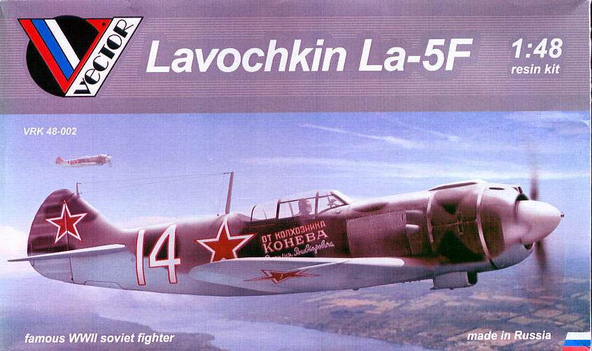
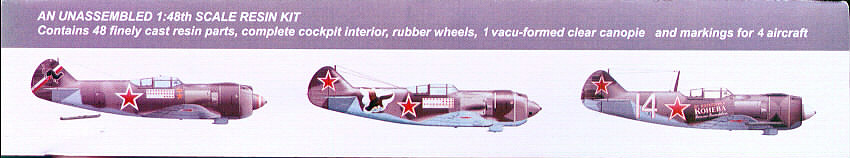
Kit #48002
MSRP $91.00
Images and text Copyright © 2009 by Matt Swan
Developmental Background
The Lavochkin La-5F was a development of the earlier La-5 which was based on the Lagg-3. A more powerful M-82F engine was installed and the aft canopy was cut down to improve rear visibility. The F actually stands for Forsirovanny which means ‘boosted’ in Russian. The original engine in the La-5 was extremely sensitive to overheat and could experience catastrophic cylinder head failure if the pilot let things get out of hand. It also suffered from very short spark life. These issues were all addressed with the new engine including better performance over 1500 meters. Other improvements incorporated into the F were better aerodynamic efficiency and improved flight controls. The La-5F lost some of it’s punch in that one of the 20mm cannons was dropped in a weight saving effort so total armament was only one 20mm cannon and one 12.7mm machine gun. The La-5F was only in production for about a year before being replaced by a further improved version, the La-5FN in 1943. The La-5FN had superior performance and the Germans quickly learned to avoid them however because both the F and the FN had nearly identical exterior profiles both airframes enjoyed having the enemy on the defensive. The La-5 series of aircraft ended production in 1945 with the La-5FN41 and approximately 9920 airframes of all types were produced.
The Kit
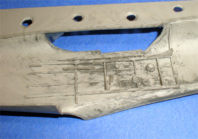
This kit arrives in a small, flimsy box that makes you wonder if an entire model is even in there but this is deceptive. While the box is not built to be stash friendly the internal components will totally take your mind off this aspect. My first impression of the resin was there must be something wrong here. The surface appearance of the parts gives the impression that there was incomplete mixing of the resin materials but upon close inspection it appears that there has indeed been complete polymerization, there are no soft spots, no micro bubbles, no surface peeling or other defects apparent on the parts.
Even though the surface looks ugly it is not, the skin of the parts is very smooth with crisp, well defined engraved panel lines. There is very little flash on the parts and no warpage apparent in the wings. This is pretty important as the wings are cast in a single large pour and fixing a bend here would amount to some work. Once the fuselage pieces were removed from the pour blocks I test fit them. The panel lines and various openings mated up well however there was some slight warpage around the cockpit area, nothing very serious and looked like it would pull out just fine during construction.
This kit only consists of forty eight resin pieces but has a tremendous amount of detail cast into those pieces. It includes only a single, three part vacuformed canopy which displays excellent clarity and raised frame lines. The instrument panel is a very fine resin piece with an acetate backing for finer detail. It is reminiscent of a photo etched part in its construction. I have some concern about its ability to hold its shape in construction though – we shall see. The landing gear struts are cast around fine steel wires which should give the aircraft plenty of support on the main gear, wheels and tires show excellent tread and hub detail as well.
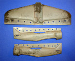
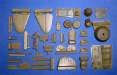
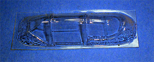
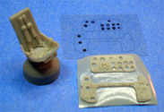
You may click on these small images to view larger pictures
Instructions and Decals
The instructions consist of a single A4 sheet of paper print one side only. One half of the page covers basic decal placement for four aircraft and the other half has 10 exploded view assembly steps crammed onto it along with a parts map – needless to say there is some fine print involved here. 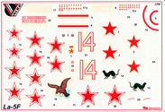 There is not paint chart or painting guides provided other than the color artwork on the box. Careful study of the parts, instructions and reference material will be required here.
The decal sheet appears fairly well done however the surface is dull and reminiscent of some of the older ICM sheets. It might be a good idea to coat this with some fixative before cutting. Print registry looks good and color density appears good.
Conclusions
While a very accurate kit, maybe the most accurate La-5F on the market it is not the only game in town. Zvezda Models did a La-5FN injection molded kit in 2006 that is very nice. The Vector kit displays some very good engineering, parts appear to fit properly and internal detail is outstanding. The inclusion of wire struts into the gear makes for good shelf survivability. Instructions are fair at best and lack any painting directions; decals look okay but may require some fixative prior to application. Overall a very interesting kit that appears quite buildable but is not for resin newbies.
3/26/09
The two main challenges with this kit verses any regular build is first; to remove the excess resin from the parts and second, to use superglue throughout rather than conventional plastic glue. Work begins in the front office as normally would with most any other aircraft build. 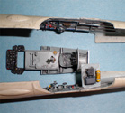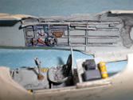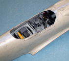 Nailing down accurate Russian colors is a bit difficult as not only does this kit not offer any color suggestions but even other manufactures like Zvevda fail here as well. I mixed my own interior blue gray but after completing the interior I decided to go to White Ensign for their Russian paints and boy am I glad I did – those are some nice paints.
I spread a thin bead of medium superglue along the fuselage edge then placed the halves together. I spent some time making sure things were lined up and pulling some slight warpage out of the fuselage. As I worked along the fuselage seam I applied small amounts of accelerator with a paint brush to lock things in place, The seam was trimmed with a razor knife to knock down a few high spots then was filled with Mr. Surfacer 500.
Next the single piece wing goes in place. This thing provides for a proper dihedral however does leave a fairly large gap that needs filled at the wing root. I filled most of this with superglue then finished it off with Mr. Surfacer 500. Tail surfaces went on without difficulty, biggest thing here was just to make sure they were properly aligned as there are no tabs or slots to help the modeler out. The exhaust shrouds were really nice and went in with only some minor adjustments. The nose cowling was a tight fit and this may have been more my fault than anything else. Maybe if I had sanded a little more off the fuselage edges it would have been an easier fit. Still nothing very difficult, just beveled the inside mounting edge a bit. So far the worse thing about this kit is the poor directions – they are very difficult to follow and require careful study and repeated test fits.
From here I’m going to pack the cowling with damp tissue paper and cover the cockpit with some masking tape then wait for my paints to arrive from the U.K.
5/9/2009
Some time has passed here and the lack of update is not because I am still waiting for paint. The paint showed up very quickly and White Ensign does a great job of customer service. I had masked the model off and primed it with Mr. Surfacer 1200 cut 50% with lacquer thinner – a pretty standard blend for me and it worked just fine. Then I came back and did some preshading with some thinned Testors flat black. Again, nothing unusual and everything appeared to be going according to plan. The color selection from White Ensign was superb and I was very much looking forward to seeing that magnificent Russian blue on the model. I went ahead and thinned some of the paint with lacquer thinner (I’ve done this before with these paints and they respond well to it) and proceeded to shoot the underside blue. So far, so good. Came back the next day and had two glossy spots right where the back of the wing joined to the fuselage. The paint was not dry there. Okay, I waited another day and still, not dry. I touched it with my finger and it was as if I had just laid it down – wet, wet, wet and now with a big finger print in it.
I had no idea what I could possibly have done wrong to cause these two small spot to not cure but went ahead and wiped off the offending paint, stripped the bottom area of the model and sanded it smooth again. Once again I primed the area with Mr. Surfacer which dried very quickly and everything looked normal. I applied the blue and once again it would not dry. I waited a week and still not dry. I stripped the bottom of the kit and resanded but this time before priming I wiped the area with some resin hardener then repainted. I made progress but still had some small wet spots, not as large as before but still there. Again with the stripping and resin hardener and repainting and finally I had a finish that looked acceptable but even now I am afraid to touch those spots for fear of what might happen. I moved on to the upper colors applying the light gray then the dark gray freehand to create the camouflage pattern. Guess what, more spots that would not dry. This time along the leading edge of the wing!!! Now remember this wing comes as a single solid unit, there is no construction seam here. I went through the same bullshit to get good paint here also. After sever weeks of jerking around with this thing I finally had it painted and then sealed it three times with Future to protect these delicate areas. Man, what a beast this thing turned in to.
So with that out of the way I proceeded to apply decals, seal them with Future, apply a standard sludge wash (being very careful of those delicate paint areas) and sealed things with some Polly Scale clear flat. Lastly some ground pastel chalks were used to apply exhaust stains, gun blast stains and some oil stains from service ports. I cut a clear armor piece for behind the pilot’s head and superglued it in place. The canopy was Futured, masked and painted then attached. I used some stretchable line from Bobeshobby in Florida to make my aerial. This stuff was very easy to use but I will withhold final judgment on the product until I have played with it a little more. At last I can call this build done and move onto something a little less stressful.
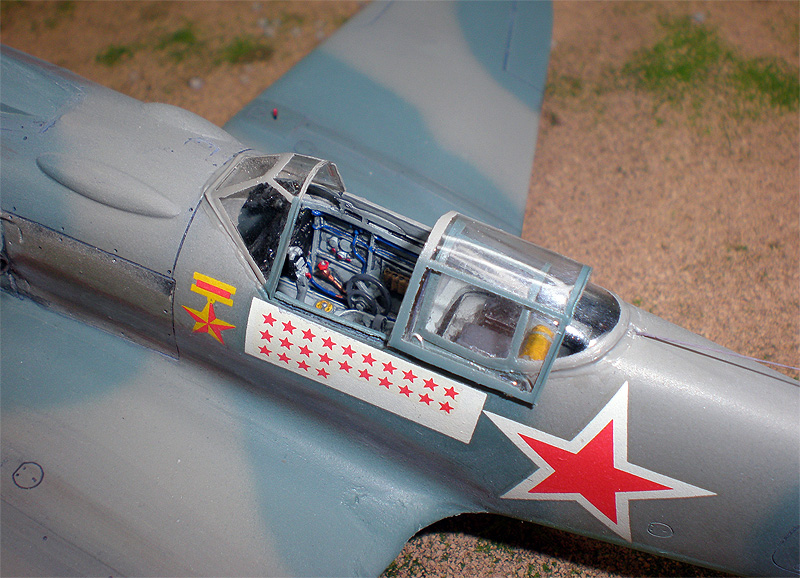
You may click on the following images to view larger pictures
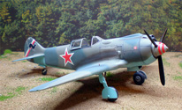
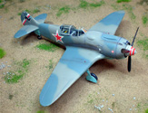
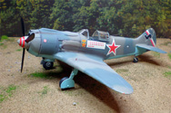
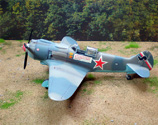
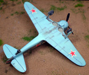